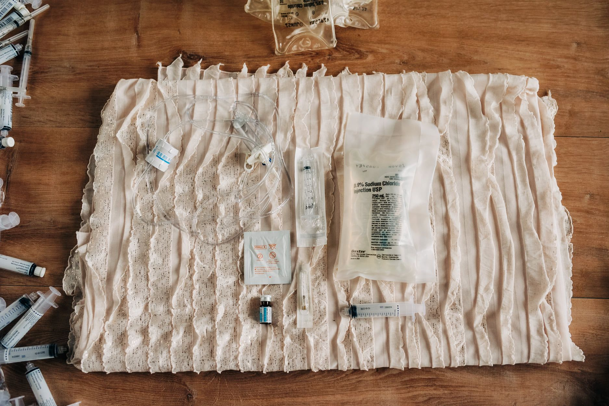
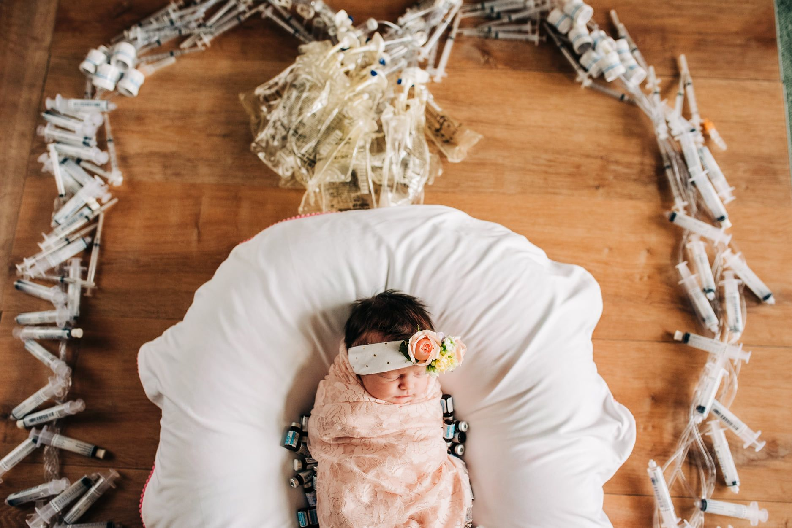

I was sick.
It may sound absurd but I didn't fully understand how sick I felt the last 9-months.
I'm not sure if it is a coping mechanism but I notice a lot of fellow HG women say the same thing.
"This post has made me realize how lucky I’ve been so far with HG, (19+2)You are such a warrior. Stay strong and safe." -Fellow HG Warrior
After posting a picture from our photo-shoot to the Hyperemesis Gravidarum (HG) Facebook Support Group , needles surrounding our sweet newborn baby, I received several comments similar to this.
I'm only now recognizing that I would have thought the exact same thing at only 19-weeks pregnant.
HOW ARE THESE OTHER HG WOMEN DOING IT!
Is this a product of being a woman or mother? If men faced the same situation would they feel the same silly humbleness?
Can us women just give ourselves some GRACE!

